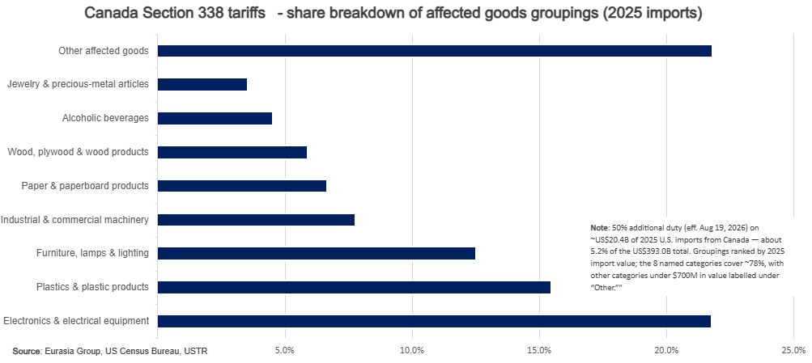

|
 |
|||
|
||||
What happened:On 20 July, the Trump administration imposed 50% Section 338 duties on three lists of Canadian products worth about $20 billion, citing alleged Canadian discrimination against US commerce tied to autos, alcoholic beverages, and dairy. The tariffs take effect in 30 days. Our take:The bigger story is the White House’s revival of Section 338, a never-used trade statute designed to allow the President to impose up to 50% duties on imports from countries that discriminate against the US commerce, to induce them to remove those barriers. The tariffs cover a range of manufactured and consumer goods, from plastics and machinery to furniture, wood products and alcoholic beverages. The relatively narrow product lists and 30-day implementation window suggest this is primarily a negotiating tool rather than a broad trade escalation. More importantly, it marks the first modern use of Section 338, transforming what had long been a dormant statutory authority into another credible unilateral trade instrument alongside Sections 232 and 301. By using the authority in a unilateral manner without a pre-existing public investigation, the White House is signaling it views Section 338 as a tool to restore some of the trade leverage it lost following the overturning of IEEPA by the courts. The 30-day window likely allows Canada to make concessions to avoid tariff implementation. A credible off-ramp would involve restoring US alcohol access, modifying dairy quota allocation and suspending the US-specific auto measures, coupled with the launch of formal USMCA negotiations. Signaling of negotiations and cooperation from Ottawa could justify the US delaying or narrowing the tariffs. Full removal of the Section 338 threat would probably require concrete implementation. There is significant legal uncertainty. The text of the statute appears to allow for the tariffs, but its use is entirely untested across the century of its existence. Legal proceedings are likely, and will revolve around both questions of process – such as the rule of USITC in formally identifying trade discrimination – and the “major questions doctrine” that conservative Supreme Court justices cited in striking down IEEPA tariffs.  |